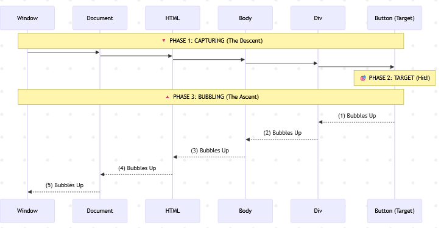

Learning Goals
At the end of this Tutorial, you will be able to:
- Understand .addEventListener() as a higher-order function that accepts asynchronous callbacks.
- Work with the built-in event object and its methods.
- Understand event bubbling and how to control it with the .stopPropagation() method.
- Implement event delegation for efficient event handling.
For this Tutorial, in your javascript/exercises folder, create a new HTML file named workfile-11.html.
Create a new empty text file named script-11.js and save it in this same folder.
Add a link to script-11.js in your workfile-11.html file using a <script> tag with the defer attribute.
Event listeners and callbacks
JavaScript includes several built-in objects. One of these is the event object, which represents something that happens in a web browser, such as:
- A user clicking a button
- A web page finished loading
- A form being submitted
- A key being pressed on the keyboard
In a previous Interacting with the DOM Tutorial, you learned how to use simple event handlers like onclick.
The modern standard is to use the .addEventListener() method. This method takes two arguments:
- The type of event to listen for (such as click).
- The function to call when the event occurs.
First, add this to the <body> of your workfile-11.html file.
<button id="myButton" class="btn-blue">Click me</button>
Next, add the following JavaScript code to your script-11.js file.
// Get the button element
const myButton = document.getElementById("myButton");
// Add event listener to button
myButton.addEventListener('click', () => {
console.log("Button was clicked");
});Connecting to previous concepts
Notice the syntax here? .addEventListener() is a higher-order function provided by the browser. The arrow function you pass to it is an asynchronous callback.
Just like we discussed in the previous tutorial, you are handing off this function to the browser. The browser holds onto it and only calls it ('calls it back') later, when the user actually clicks the button.
The event object as a data receiver
When an event occurs, JavaScript automatically creates an event object containing details about what just happened (e.g., what was clicked, where the mouse pointer was, etc.).
Remember the data receiver pattern from the Callback functions tutorial? Just like .forEach() automatically passed the current item to your callback, addEventListener automatically passes this event object to your callback.
You don't create this object; the browser creates it the moment the event happens and injects it into your function.
To access these details, simply add a parameter (usually named e or event) to your callback function.
Update your event listener code as shown below.
// Add event listener to button
myButton.addEventListener('click', e => {
// Access properties of the event object
console.log(e.target.id); // ID of clicked element
console.log(e.target.classList); // CSS class(es) of clicked element
});The e.target property is particularly useful—it refers to the specific element that triggered the event.
Event bubbling and propagation
When an event occurs on an element, it doesn't just affect that one element. It travels through the DOM tree in a process called event propagation.
Capture |
The event starts at the very top of the window and travels down the DOM tree, passing through every parent element until it reaches the target. |
Target |
The event arrives at the button or element you actually clicked. |
Bubbling |
After reaching the target, the event bubbles up from the target element, triggering event listeners on the parent, then the grandparent, and so on, all the way back to the root. |
Note: The .addEventListener() method listens to the Bubbling phase by default. This means if you click a button inside a <div>, the click event will fire on the button first, and then "bubble up" to fire on the <div>.
Here's an example to demonstrate event bubbling. Add these three HTML elements to workfile-11.html:
<div id="outer">
<div id="inner">
<button id="myNewButton">Click me</button>
</div>
</div>Next, add this code to your script-11.js file.
document.getElementById('myNewButton').addEventListener('click', () => {
console.log('Button clicked');
});
document.getElementById('inner').addEventListener('click', () => {
console.log('Inner div clicked');
});
document.getElementById('outer').addEventListener('click', () => {
console.log('Outer div clicked');
});When you click the button, you'll see all three messages in the console because the event bubbles up through the DOM tree.
Preventing event bubbling
Sometimes you don't want an event to trigger listeners on parent elements. You can stop the bubbling process using the .stopPropagation() method.
// **** STOPPING PROPAGATION ****
document.getElementById('myNewButton').addEventListener('click', e => {
console.log('Button clicked - no parent event triggered');
e.stopPropagation(); // Stops the event from bubbling up
});Event delegation
Now that you understand event bubbling, we can use it to our advantage with a technique called event delegation.
Imagine you have a list of 100 buttons. Instead of adding 100 separate event listeners (one for each button), you can add a single event listener to their parent container.
Because events bubble up, any click on a button will eventually reach the container. The container can then check which button triggered the event using e.target.
Before continuing, add a <style> tag to the <head> of your workfile-11.html and paste in the following CSS rules.
.btn {
font-size: 16px; margin: 5px; border-radius: 5px; padding: 10px 20px;
cursor: pointer; border: none; color: white
}
.btn-blue { background-color: #007BFF; }
.btn-green { background-color: #28a745; }
.btn-red { background-color: #dc3545; }
.btn-purple { background-color: #6f42c1; }Next, add the following <div> container with a <h2> subheading and three buttons to your workfile-11.html file.
<div id="buttonContainer">
<h2>Button container</h2>
<button id="btn-1" class="btn btn-green">Button 1</button>
<button id="btn-2" class="btn btn-red">Button 2</button>
<button id="btn-3" class="btn btn-blue">Button 3</button>
</div>Finally, add this code to your script file to implement delegation.
// **** EVENT DELEGATION ****
const container = document.getElementById('buttonContainer');
// Add single event listener to container
container.addEventListener('click', e => {
// Check if clicked element is a button (has CSS class of 'btn')
if (e.target.classList.contains("btn")) {
console.log(`You clicked button with this ID: ${e.target.id}`);
// Add new CSS class to targetted button
e.target.classList.add('btn-purple');
}
});Using Event Delegation has several advantages:
- Efficiency: Reduces the number of event listeners needed in memory.
- Dynamic Elements: It works even if you add new buttons to the container later via JavaScript. The container will simply catch their events too as they bubble up.
Try it yourself
---
Create three nested <div> elements with different background colours.
Add click event listeners to each div.
Experiment with event bubbling and the .stopPropagation() method.
---
Create a button that changes its text when clicked.
Add both a click and mouseover event listener to the same button.
The mouseover should change the button's background colour.
---
Create a list of items (<ul> with several <li> elements).
Use event delegation to handle clicks on any list item.
When an item is clicked, change its text color.
---
More learning resources
Tutorial Quiz
Tutorial Podcast
Sample AI prompts
Explain the difference between event bubbling and event capturing in JavaScript.Compare and contrast using inline event handlers (onclick="") versus the .addEventListener() method. What are the pros and cons of each approach?Show me how to implement event delegation for a dynamic list that allows items to be added or removed.